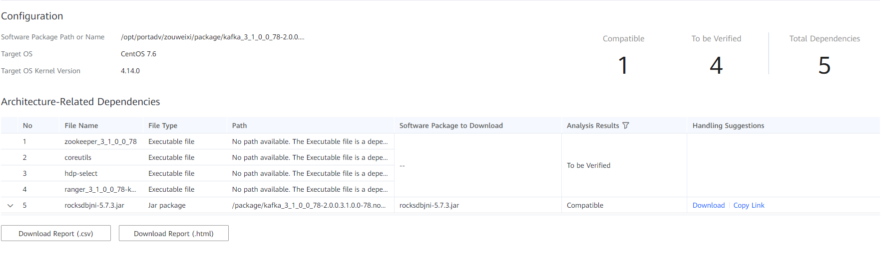

Prerequisites
The analysis task is complete.

The porting reports vary with the target OS because different OSs support different SO libraries.
Procedure
- Choose Software Porting Assessment from the navigation pane on the left.
- In the list of historical reports, click the name of the report to be viewed.The report page is displayed.
- After an analysis task is complete, you can click View Report to open the report page.
- The analysis reports are named by the report generation time.
Figure 1 Porting assessment report
Table 1 Parameters in the porting assessment report Parameter
Description
Configuration
Displays the software installation path, software package name, or path of the software installed on the x86 platform, target OS, and target OS kernel version.
Architecture-Related Dependencies
Displays the SO files.
- You can click Download in Handling Suggestions to download the dynamic libraries, static library files, software packages, executable files, and JAR packages that are compatible with the Kunpeng platform. You can also download the source code of the Kunpeng version and compile it. For some non-open-source dependency files, the download URLs are not available. You need to obtain the files and then replace accordingly.
- If the compatibility with the Kunpeng platform is unknown, verify the compatibility on the Kunpeng platform first. If the software is not compatible with the Kunpeng platform, you can obtain a compatible version from the vendor, obtain the source code and compile it, or use alternative software.NOTE:
If a message indicating that the file is compatible with the Kunpeng platform is displayed in the Handling Suggestions column, the object to be analyzed is a ported software package or source package, and the x86 dependency file has a corresponding Kunpeng dependency file on the Kunpeng platform.